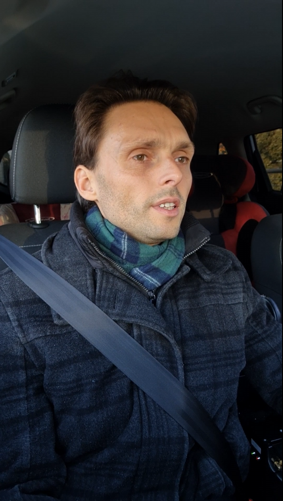

In recent years, audio-visual speech recognition (AVSR) gains increasing attention as an important part of human-machine interaction. However, the publicly available corpora are limited and lack in-the-wild recordings, especially in driving conditions when acoustic signal is frequently corrupted by background noise. Research so far has been collected in constrained environments, and thus cannot reflect the true performance of AVSR systems in real-world scenarios. Often there are no data available for languages other than English. To meet the request for research on AVSR in unconstrained driving conditions, this paper presents a corpus collected ‘in-the-wild’. Along with this, we propose cross-modal attention method for robust multi-angle AVSR for vehicle conditions that leverages visual context to improve both: recognition accuracy and noise robustness. We compare the impact of different state-of-the-art methods on the AVSR system. Our proposed model achieves state-of-the-art results on AVSR with 98.65% accuracy in recognising driver voice commands.
| Parameter | Value |
|---|---|
| Number of speakers | 20 |
| Amount of voice commands | 62 |
| Command repetitions by each speaker | 10 |
| Number of annotated videos | ≈ 22,350 |
| Duration of audio-visual data | ≈ 6 h 54 m |
| Clean speech percentage | 95% |
| Video data format | mp4 |
| Frame rate | 60 FPS |
| Data volume | ≈ 840 GB |
| # | Neural network model architecture |
Accuracy, % | |
|---|---|---|---|
| Val | Test | ||
| VSR models | |||
| 1 | 3DResNet18 | 86.53 | 76.74 |
| 2 | 3DResNet18 + SA | 88.66 | 77.68 |
| 3 | 3DResNet18 + BiLSTM | 82.94 | 75.89 |
| 4 | 3DResNet18 + SA + BiLSTM | 85.55 | 83.46 |
| ASR models | |||
| 5 | 2DResNet18 | 97.62 | 95.12 |
| 6 | 2DResNet18 + SA | 97.90 | 95.61 |
| AVSR models | |||
| 7 | Concatenation-based fusion of 4 & 6 | 98.91 | 98.63 |
| 8 | CMA-based fusion of 4 & 6 | 99.03 | 98.65 |